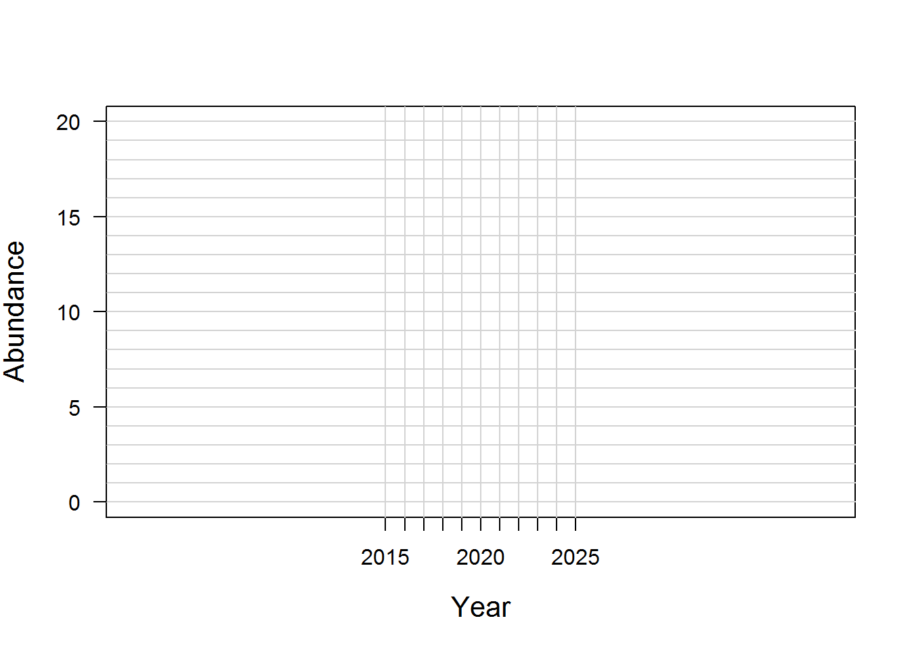
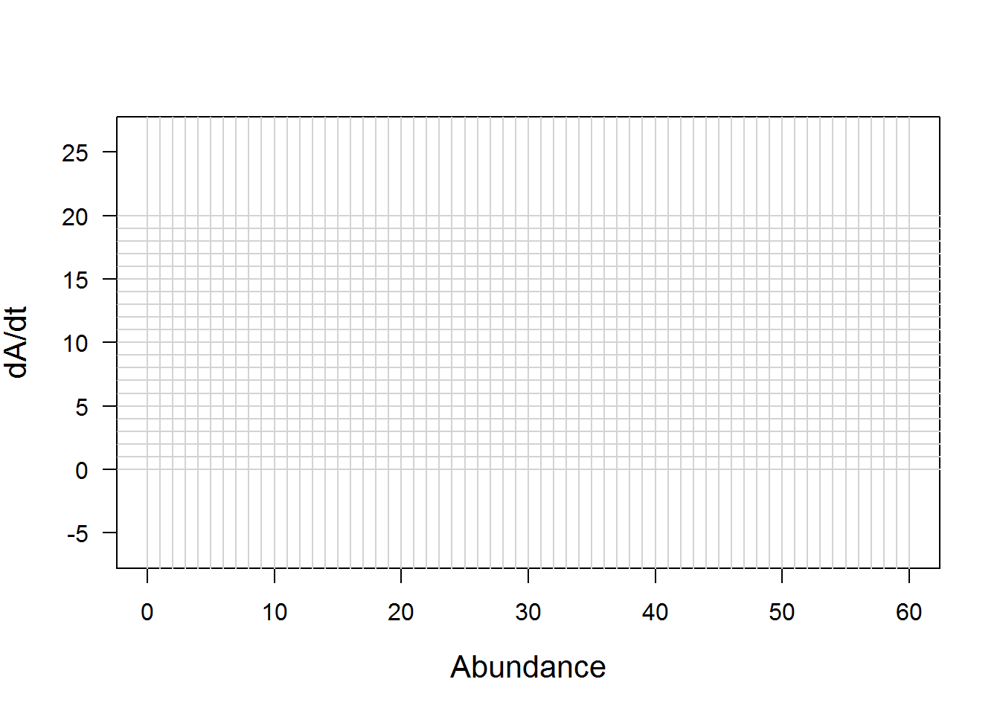

NAME:
This laboratory consists of 4 exercises. Questions and problem sets are located at the end of each laboratory section. Note the numbering of the questions reflecting the laboratory exercise and the question number (e.g., 1.2, 1.2). Use this numbering when answering the questions and turning in laboratory. Responses to questions will be due by 5pm September 6th. Responses are to be entered at https://goo.gl/forms/7fCnlGxMnSy4VXed2. This lab is worth 25 points.
This exercise will require 4 class volunteers to ‘fish’ the population. We will fill in the table below as a class. Note the recruitment rate is 1 for gold and 3 for silver
1.1. Did any of the fish species go extinct? If so which ones? (1 Point)
1.2. How could you have managed the catch to prevent the fish from becoming extinct? (1 Point; Note: There is no right or wrong answer, just propose and idea and defend why it may work)
Lake Bulldog is a 10 acre lentic system located in Mississippi. The population dynamics of Largemouth Bass Micropterus salmoides in the system is characterized by the number of births and immigrants, less the number of deaths and emigrants, a model known as the BIDE model. This model formally calculates the change in a population over time as:
\[\frac{dA}{dt}=B+I-(D+E)\]
This equation is not too scary, it simply states:
\[\frac{The\,change\,in\,abundance}{The\,change\,in\,time}=Births+Immigra nts-(Deaths+Emmigrants)\]
and conceptually it looks like this:

Figure 1.—Conceptual representation of the BIDE model. The population gains represents additions to the population and the population losses are flows out of the population. The arrows pointing into and out of the box are called ‘flows’. This is what is commonly referred to as a stock and flow or a box and flow diagram.
In most applications the change in time is 1 year (i.e., dt = 1), which makes it easy to forecast population dynamics over time. Let’s expand the equation above to do this (notice that is equal to 1)
\[\frac{dA}{dt}=B+I-(D+E)\]
\[\frac{{{A}_{t+dt}}-{{A}_{t}}}{dt}=B+I-(D+E)\]
\[\frac{{{A}_{t+1}}-{{A}_{t}}}{1}=B+I-(D+E)\]
\[{{A}_{t+1}}-{{A}_{t}}=B+I-(D+E)\]
\[{{A}_{t+1}}={{A}_{t}}+B+I-(D+E)\]
\[{{A}_{t+1}}={{A}_{t}}+\frac{dA}{dt}\]
OK I have hopefully proved my point, let’s move on to the fun stuff. Suppose, the birth, immigration, death, and emigration rates for Lake Bulldog are:
Using the figure for Lake Bulldog (laminated sheet 1):
1.Add 5 goldfish to the outline of Lake Bulldog. This represents the initial population abundance in 2015, see Table 1.
2.Add 4 Goldfish representing births and remove 3 goldfish representing deaths from the lake and count how many gold fish remain in the Lake Bulldog. The difference of births and deaths is \(\frac{dA}{dt}\) (Equation 3). Record this number for \(\frac{dA}{dt}\) in year 2015.
3.Record this number as the abundances (\(A\)) in year 2016. This should equal equation 8 if you simply add them up in Table 1.
4.Add 4 Goldfish representing births and remove 3 goldfish representing deaths from the lake and. The difference of births and deaths is \(\frac{dA}{dt}\). Record this number for \(\frac{dA}{dt}\) in year 2016.
5.Count how many gold fish remain in the Lake Bulldog Record this number as the abundances (A) in year 2017.
6. Repeat steps 4 and 5 until Table 1 is filled.
Table 1. Forecasted population dynamics of Largemouth Bass in Lake Bulldog.
| Year (t) | \(\frac{dA}{dt}\) | \(A\) | Year (t) | \(\frac{dA}{dt}\) | \(A\) |
|---|---|---|---|---|---|
| 2017 | __________ | __________ | 2022 | __________ | __________ |
| 2018 | __________ | __________ | 2023 | __________ | __________ |
| 2019 | __________ | __________ | 2024 | __________ | __________ |
| 2020 | __________ | __________ | 2025 | __________ | __________ |
| 2021 | __________ | __________ | 2026 | __________ | __________ |
2.1. Given the parameters used to calculate and A report the following values (3 points): A) What will be in year 2028?
B) What will A be in year 2027? C) Suppose the birth rate was 3 and the death rate was 4 (immigration and emigration are 0) and the initial population was 8 in 2015. How many fish will there be in 2018?
2.2. The model of population dynamics in Lake Bulldog assumes 3 fish/year are added per year. Does this seem biologically realistic to you? Why or why not? (3 points)
2.3. What does setting Immigration and Emigration to 0 assume? (3 points)
Bulldog Creek is a first order tributary (i.e., headwater stream)1 to Lake Bulldog and is occupied by Largemouth Bass. There is a 5 m scenic waterfall located at river kilometer (RKM) 0.5. The birth rate is similar to Lake Bulldog but the death and emigration rates differ.
\[\begin{align} & \text{Birth:}\,B=3 \\ & \text{Immigration:}\,I=0 \\ & \text{Death:}\,D=2 \\ & \text{Emigration:}\,E=1 \\ \end{align}\]
Using the figure for Bulldog Creek (laminated sheet 2):
Table 2. Forecasted population dynamics of Largemouth Bass in Bulldog Creek.
## Warning in `[<-.factor`(`*tmp*`, iseq, value = 10): invalid factor level,
## NA generated| Year (t) | \(\frac{dA}{dt}\) | \(A\) | Year (t) | \(\frac{dA}{dt}\) | \(A\) |
|---|---|---|---|---|---|
| 2017 | __________ | NA | 2022 | __________ | __________ |
| 2018 | __________ | __________ | 2023 | __________ | __________ |
| 2019 | __________ | __________ | 2024 | __________ | __________ |
| 2020 | __________ | __________ | 2025 | __________ | __________ |
| 2021 | __________ | __________ | 2026 | __________ | __________ |

3.1. The BIDE model allows for emigration from the system, but the immigration rate is 0. Is this biologically reasonable to you given this system? Why or why not? (3 points)
3.2. In the Bulldog Creek example, what was the difference between births and deaths? Was the number positive, negative, or 0? Based on whether the number is positive, negative or 0, what should the population do if the initial abundance was 20 (hint: look at Figure 2). (3 points)
3.3. How does the plot of abundance for Bulldog Creek compare to the same plot for Lake Bulldog? How does the difference between births and deaths for Lake Bulldog compare to Bulldog Creek? (3 points)
The exponential model adds biological realism to the generic BIDE model. This is done by making population growth dependent on population abundance. Follow the exercise below for a better understanding of exponential population dynamics.
Table 3. Forecasted population dynamics of Largemouth Bass in Lake Bulldog.
| Year (t) | Population gains | \(dA/dt\) | A |
|---|---|---|---|
| 2015 | 5 | ||
| 2016 | |||
| 2017 | |||
| 2018 | |||
| 2019 | |||
| 2020 | |||
| 2021 | |||
| 2022 | |||
| 2023 | |||
| 2024 | |||
| 2025 |

Now that we have an increased understanding in population dynamics, we can add harvest to the population, this will be key for harvesting fish, or any other critter for that matter. Let’s build on the previous exponential population by adding harvest to the equation. This can be formally expressed as:
\[\frac{dA}{dt}=r\cdot A-F\cdot A\]
Like before let’s reinforce this with our goldfish on a stock and flow diagram.
Table 4. Forecasted population dynamics of Largemouth Bass in Lake Bulldog.
| Year (t) | Population gains | Population losses | \(dA/dt\) | A |
|---|---|---|---|---|
| 2015 | 5 | |||
| 2016 | ||||
| 2017 | ||||
| 2018 | ||||
| 2019 | ||||
| 2020 | ||||
| 2021 | ||||
| 2022 | ||||
| 2023 | ||||
| 2024 | ||||
| 2025 |
4.1. How does the plot of versus A for both exponential models differ for the BIDE models? (2 points)
4.2. Given the population dynamics and rates for the exponential model with harvest, what would you set harvest to? Why? (2 points; there is really no right or wrong answer here I am curious about your process)
4.3. Can you think of any way to improve this model? (1 point)